F-011-A：机构重启
用于对设备系统、左右点单屏和六轴机械臂发起重启，是当前远程操作里唯一需要二次确认的高风险动作。
- 点击
机构重启后进入二级子菜单。 - 二级动作固定包含
重启系统、重启点单屏（左）、重启点单屏（右）、重启六轴机械臂（注意安全，谨慎使用）。 - 选择具体动作后进入确认页，点击
确认执行才真正下发指令。
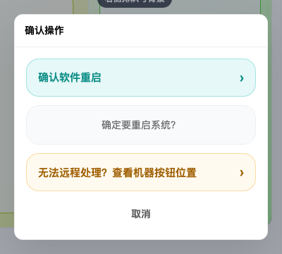
设备管理是 COFE+ 后台当前用于查看设备概览、定位目标设备、维护入场信息、查看技术状态并发起基础设备操作的统一入口。
当前页面覆盖以下能力：
进入设备管理页后，用户先看到设备总数、运行中、故障、停用 4 张统计卡，以及顶部的主筛选栏。这一层承担“先看全局健康度，再决定是否继续筛选”的作用。
+ 设备录入 入口。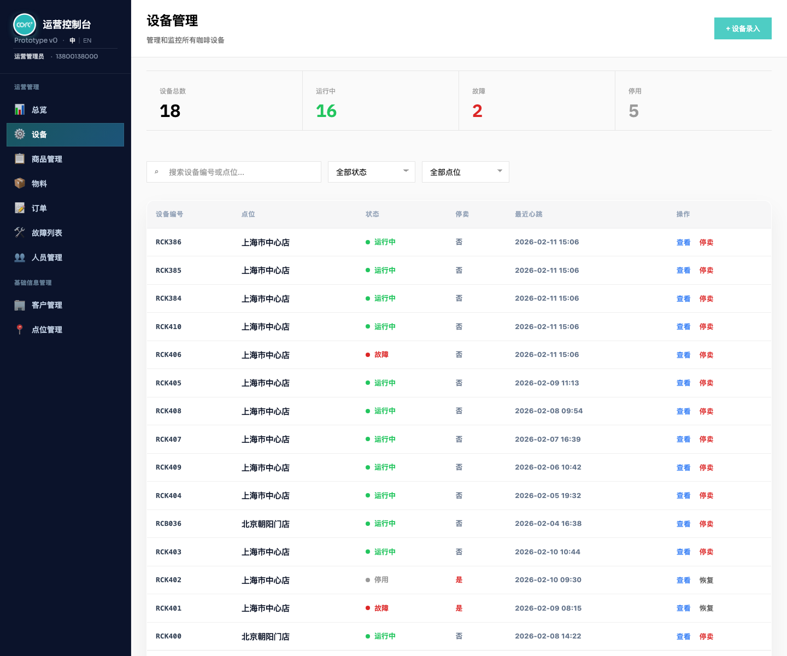
用户可以通过搜索框、状态筛选和点位分类筛选快速定位目标设备；搜索同时覆盖设备编号、点位名称和点位编码。
全部状态 / 运行中 / 故障。停用 和 未入场 口径，但当前状态下拉不支持对这两类做单独筛选。全部点位 / 展会点位 / 运营点位。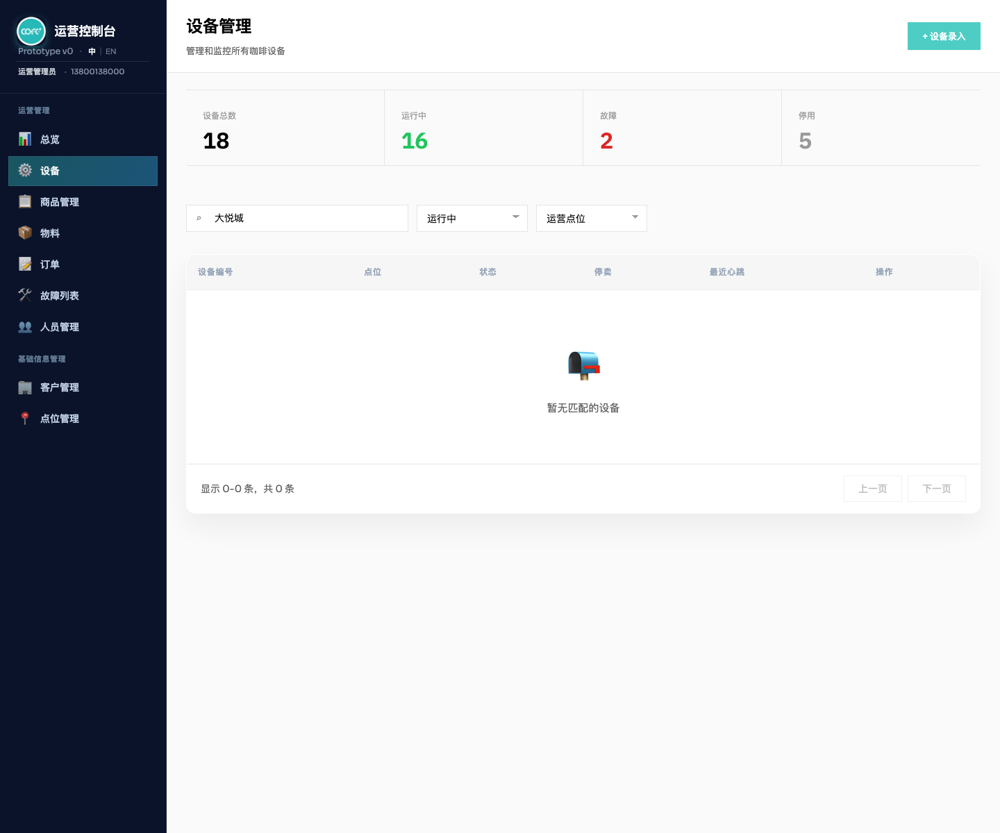
设备列表是页面的主工作区。桌面端使用表格承载高密度信息，移动端使用状态卡片保证可读性和可操作性。
设备编号 / 商户 / 点位 / 状态 / 停卖 / 最近心跳 / 操作。商户 / 点位 / 停卖 / 状态 / 最近心跳。查看 与 停卖 / 恢复。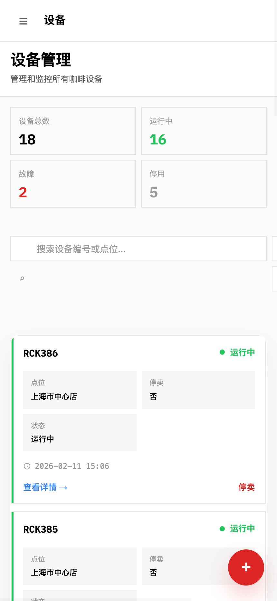
点击 + 设备录入 后进入最新设备入场页，完成新设备入场配置。当前最新版不是旧的简化录入表单，而是按当前登录商户自动限定设备、点位和员工范围，并在入场阶段一并完成支付方式、广告屏和点位照片配置。
选择设备、点位名称，并支持 + 新增点位 快速创建并自动选中。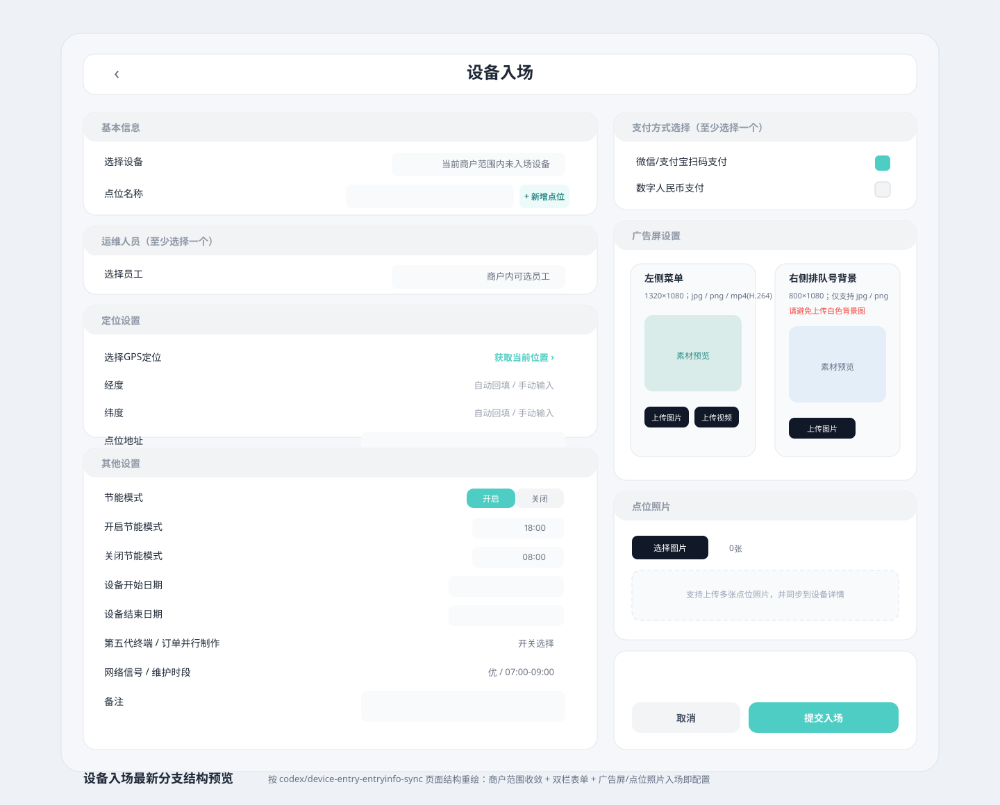
设备详情弹层是设备管理的核心查看面。最新版本采用“状态首屏 + 操作优先”的信息层级，首屏只保留设备概览、设备状态和运营摘要，让用户先判断这台设备是谁、在哪里、是否正常，再通过右侧入口进入二级信息。
左主内容 + 右侧操作区 布局。设备概览、设备状态、运营摘要 三张卡片。设备概览 当前展示 设备编号 / 点位 / 设备类别，不再展示 部署类型。运营摘要 汇总当前点位、支付方式、节能模式、网络信号、最近点位变更和记录摘要。设备操作 和 详细信息 两组；详细信息包含 入场详情 / 广告屏信息 / 技术状态 / 记录摘要。记录摘要 继续点击 查看状态记录 时会先关闭摘要浮层，避免浮层层级错乱。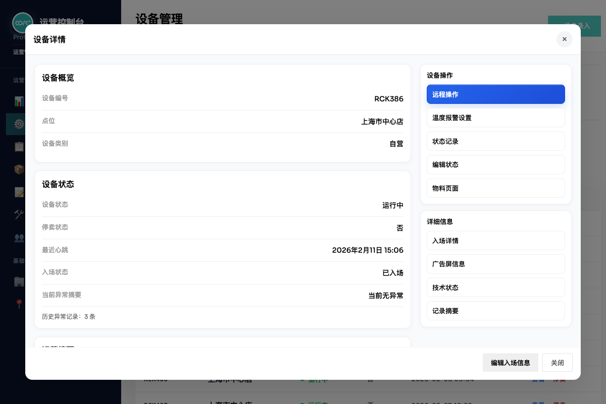
技术状态用于承载当前设备的实时技术指标、软件版本和关键机构运行状态，帮助运维在不离开当前设备上下文的情况下快速判断机器是否正常，以及问题更偏向硬件还是软件。
详细信息 > 技术状态 打开。冰箱温度、制作仓温度、豆仓温度、豆仓湿度、更新时间、上位机软件、点单屏软件、点单屏系统、点单屏内核、广告屏版本、固件版本 等只读字段。机构状态 标签组，当前口径会展示咖啡机、机械臂、落杯器、制冰机、前道浆、压盖器、出杯口和混水水路等机构状态。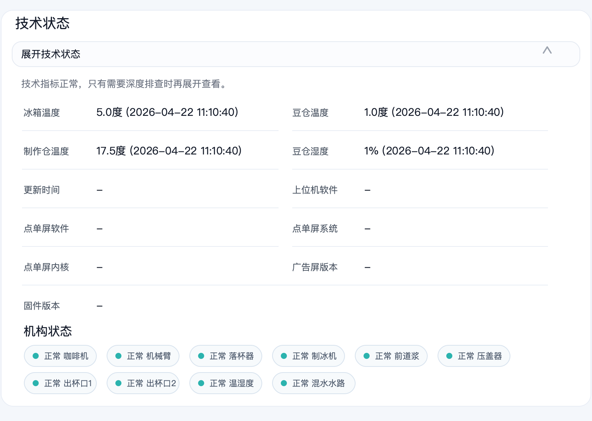
入场信息承载设备落位和基础配置，是详情里最重要的业务信息块之一。用户从右侧 详细信息 > 入场详情 进入，查看基础字段、补充字段、点位图片和点位变更记录，并通过底部按钮进入编辑。
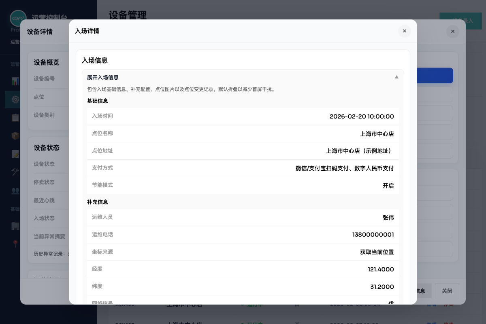
广告屏信息按左右物理屏拆开管理，避免素材传错位置。左侧菜单与右侧排队号背景分别展示、分别维护。
详细信息 > 广告屏信息 打开。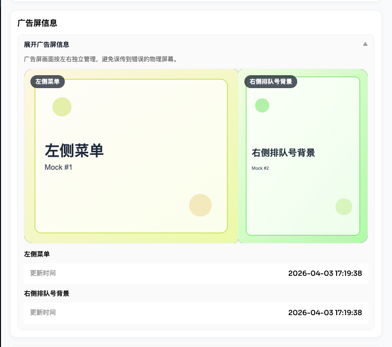
温度报警设置通过独立弹层打开，按温区展示参数卡片，并允许逐区修改阈值。
修改。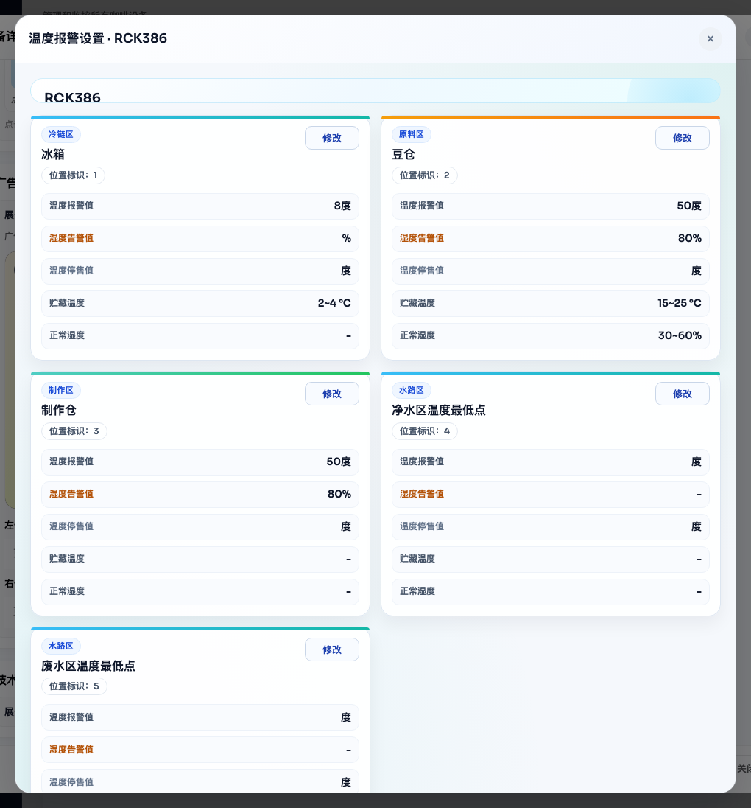
状态记录用于追溯设备最近的异常和运维处理，不承担远程操作总日志的展示职责。
设备操作 > 状态记录 直接打开完整状态记录弹层。详细信息 > 记录摘要 查看异常 / 运维条数，再点击 查看状态记录 进入完整弹层。异常记录 与 运维记录 双标签。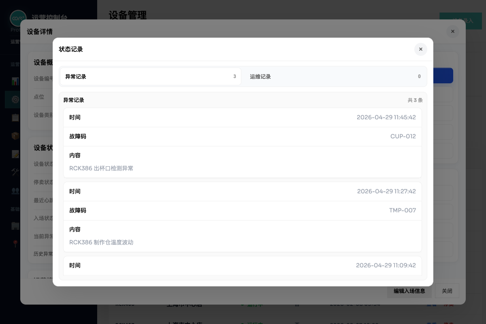
用户可以从右侧操作区直接修改设备状态，快速把系统状态同步到线下真实状态。
正常 / 故障 / 缺料。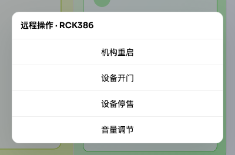
远程操作通过弹层发起，当前一级菜单固定包含 机构重启、设备开门、设备停售、音量调节 4 个动作。其中只有 机构重启 需要进入二级确认流，其余动作都属于一级直达动作。
机构重启 进入二级子菜单，再进入确认页。设备开门、设备停售、音量调节 当前点击后直接执行，并形成操作记录。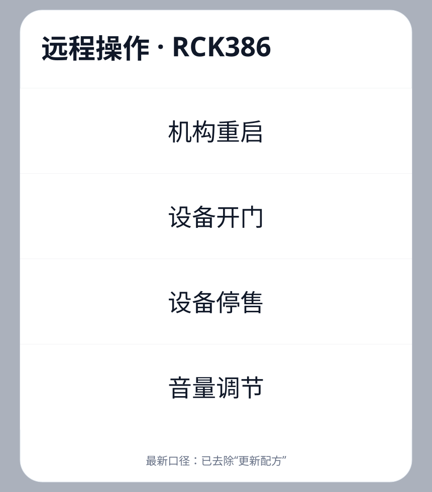
用于对设备系统、左右点单屏和六轴机械臂发起重启，是当前远程操作里唯一需要二次确认的高风险动作。
机构重启 后进入二级子菜单。重启系统、重启点单屏（左）、重启点单屏（右）、重启六轴机械臂（注意安全，谨慎使用）。确认执行 才真正下发指令。
用于直接向设备下发开门指令，便于现场补料、巡检或运维处理。
已向设备 {设备编号} 下发指令：设备开门。用于向设备下发停售指令，作为远程操作的一类设备控制动作。
停卖 展示，列表停卖状态仍由设备数据本身决定。用于向设备下发音量调整类指令，是当前远程操作菜单中的直达入口之一。
设备音量 / 点单屏音量 的二级拆分配置。描述： 作为运营人员，我希望进入设备管理页后先看到当前可见设备的整体状态，这样我能快速判断当前设备池是否稳定。
设备管理 页面。描述： 作为运营人员，我希望从设备管理页进入最新设备入场页，并在当前商户范围内完成设备、点位、员工、支付方式、广告屏和点位照片配置，这样新设备才能按最新流程正式纳入设备管理范围。
+ 设备录入。设备入场 页面。+ 新增点位 并自动选中。提交入场 完成录入并返回设备管理。设备、点位 和 员工，不再单独提供“所属客户”选择框。描述： 作为运营或运维人员，我希望通过设备编号、点位和状态快速缩小范围，这样我能尽快找到目标设备。
设备编号、点位名称 和原始点位编码。全部状态、运行中、故障。停用 或 未入场 的单独筛选项；这两种口径只能在列表展示中查看，不能通过状态筛选直接过滤。全部点位、展会点位、运营点位。描述： 作为后台使用者，我希望在桌面端和移动端都能快速浏览设备，并直接进行列表级操作。
描述： 作为运维人员，我希望打开设备详情后先看到设备身份、当前状态和运营摘要，再决定是做远程操作、查看记录，还是进入入场 / 广告屏 / 技术详情。
查看 或 查看详情。左侧主内容 + 右侧设备操作区 结构。设备概览 至少展示 设备编号、点位、设备类别；当前不再展示 部署类型。设备状态 至少展示 设备状态、停卖状态、最近心跳、入场状态、当前异常摘要。运营摘要 至少展示 当前点位、支付方式、节能模式、网络信号、最近变更、记录摘要。设备操作 区固定包含 远程操作、温度报警设置、状态记录、编辑状态、物料页面。详细信息 区固定包含 入场详情、广告屏信息、技术状态、记录摘要。描述： 作为运维人员，我希望在设备详情里展开技术状态，查看温度、湿度、版本和机构状态，这样我可以先判断故障更偏向现场硬件问题还是软件 / 配置问题。
详细信息 区点击 技术状态。技术状态 必须从右侧 详细信息 入口打开，不再默认占用左侧首屏。冰箱温度、制作仓温度、豆仓温度、豆仓湿度、更新时间、上位机软件、点单屏软件、点单屏系统、点单屏内核、广告屏版本、固件版本。机构状态 标签区，并展示多个机构的当前状态标签。-，但结构不能消失。描述： 作为运营人员，我希望在设备详情里查看并编辑入场信息、补充字段、点位图片和点位变更记录，这样我可以确认设备的线下落位和基础配置。
详细信息 区点击 入场详情。编辑入场信息。详细信息 > 入场详情 打开，不再默认占用左侧首屏。入场时间、点位名称、点位地址、支付方式、节能模式。运维人员、运维电话、GPS定位、经纬度、网络信号、设备开始日期、设备结束日期、第五代终端、订单并行制作、维护时段、备注。开启 时，详情和编辑弹层都展示节能开始 / 结束时间。变更前 和 变更后。描述： 作为运营人员，我希望按照设备的左右物理屏分别查看和维护广告屏素材。
详细信息 区点击 广告屏信息。详细信息 > 广告屏信息 打开，并以 左侧菜单 和 右侧排队号背景 两组固定区域展示。jpg/png 图片和 mp4(H.264) 视频。jpg/png 图片。描述： 作为运维人员，我希望在当前设备上下文中查看各温区参数，并逐项修改报警阈值。
描述： 作为运维人员，我希望在设备详情里追溯异常和运维处理信息。
设备操作 > 状态记录。详细信息 > 记录摘要，先查看异常记录数和运维记录数。查看状态记录。异常记录 标签。运维记录 标签查看补料 / 清洁等记录。记录摘要 通过右侧 详细信息 入口打开，只展示异常数量、运维数量和查看入口。记录摘要 点击 查看状态记录 时，旧摘要浮层必须关闭，完整状态记录弹层必须位于最上层。异常记录 与 运维记录 双标签结构。异常记录 和 运维记录，不会单独展示远程操作日志。描述： 作为运维人员，我希望直接在设备详情中更新设备状态。
描述： 作为运维人员，我希望在设备详情中发起远程操作，并在必要时进行二次确认。
设备总数、运行中、故障、停用。+ 设备录入 入口，并统一跳转至设备录入页面。设备编号、点位名称、原始点位编码搜索设备。全部状态 / 运行中 / 故障 筛选，当前不支持 停用 / 未入场 的单独筛选。全部点位 / 展会点位 / 运营点位 筛选。商户 字段。商户、点位、停卖、状态、最近心跳。15 条。查看 与 停卖 / 恢复。左主内容 + 右侧操作区 布局。设备编号、点位、设备类别，当前不再展示 部署类型。设备状态、停卖状态、最近心跳、入场状态、当前异常摘要。设备概览、设备状态、运营摘要 三类信息。设备操作 必须包含 远程操作、温度报警设置、状态记录、编辑状态、物料页面。详细信息 必须包含 入场详情、广告屏信息、技术状态、记录摘要。详细信息 > 技术状态 打开，并展示温度、湿度、版本和机构状态。详细信息 > 入场详情 打开，并支持点位图片预览和点位变更记录查看。左侧菜单 与 右侧排队号背景 两个固定槽位展示。jpg/png/mp4(H.264)；右侧排队号背景必须只支持 jpg/png。异常记录 与 运维记录 双标签。记录摘要 点击 查看状态记录 时，必须先关闭摘要浮层，避免弹层顺序错乱。正常、故障、缺料 三个选项。故障 时，系统必须同步新增异常记录。机构重启、设备开门、设备停售、音量调节。机构重启 必须先进入二级菜单，再进入确认执行页。| 场景 | 当前规则 | 系统结果 |
|---|---|---|
| 列表状态展示 | 设备状态为故障 | 列表状态显示 故障 |
| 列表状态展示 | 设备未故障但销售状态为停用 | 列表状态显示 停用 |
| 点位展示 | 未入场或无点位 | 列表显示 未入场，详情概览显示 未分配点位 |
| 员工设备范围 | 无设备页权限 | 空状态显示 当前账号暂未开通设备页面权限 |
| 员工设备范围 | 有页面权限但未分配设备 | 空状态显示 你已拥有设备页面权限，但当前未分配可查看的设备，请联系管理员调整页面设备范围 |
| 广告屏上传 | 右侧上传视频 | 阻止保存，并提示右侧仅支持 jpg/png |
| 广告屏上传 | 左侧上传非 H.264 的 mp4 |
阻止保存，并提示编码不支持 |
| 广告屏上传 | 素材分辨率与推荐值不符 | 给出警告，但不强制拦截 |
| 温度报警保存 | 编辑单个温区并保存 | 只更新当前设备的温度报警配置，并刷新当前弹层 |
| 设备详情首屏 | 打开设备详情 | 左侧只展示 设备概览 / 设备状态 / 运营摘要，重信息通过右侧二级入口打开 |
| 详细信息入口 | 点击 入场详情 / 广告屏信息 / 技术状态 / 记录摘要 |
打开二级浮层，并默认展开对应详情内容 |
| 点位变更记录 | 多条历史点位变更 | 默认显示折叠摘要卡片，点击单条后展示完整变更前 / 变更后 |
| 记录摘要跳转 | 在记录摘要中点击 查看状态记录 |
先关闭记录摘要浮层，再打开完整状态记录弹层 |
| 状态编辑 | 改为 故障 |
刷新摘要，并追加异常记录 |
| 状态编辑 | 改为 缺料 |
详情状态口径变为 缺料，列表主状态仍按运行 / 停用规则展示 |
| 远程操作 | 一级直达动作 | 立即执行、关闭弹层并提示成功 |
| 远程操作 | 机构重启 二级动作 |
先进入确认页，再执行 |
| 远程操作记录 | 已产生远程操作记录 | 当前不会在状态记录弹层中单独展示 |
| 入场信息 | 原始数据缺失 | 展示稳定空态或示例内容，保证详情样式稳定 |
全部状态 / 运行中 / 故障，不支持单独筛选 停用 或 未入场。异常记录 和 运维记录，没有单独的远程操作标签。详细信息 入口打开。设备开门、设备停售、音量调节 当前都是统一直达动作，没有进一步参数配置流程。